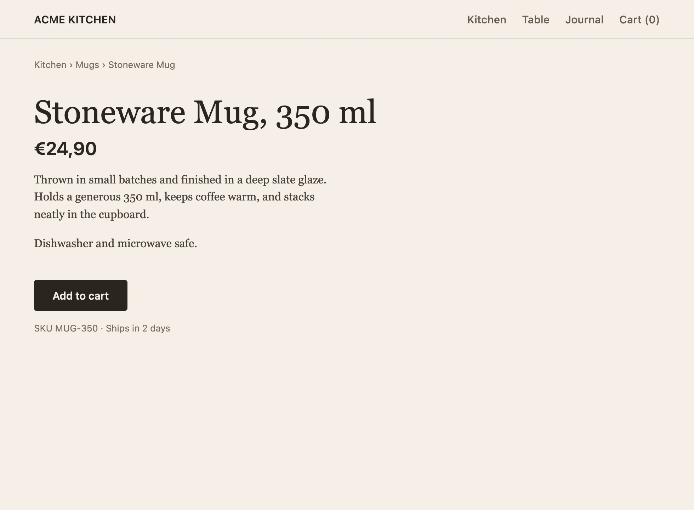
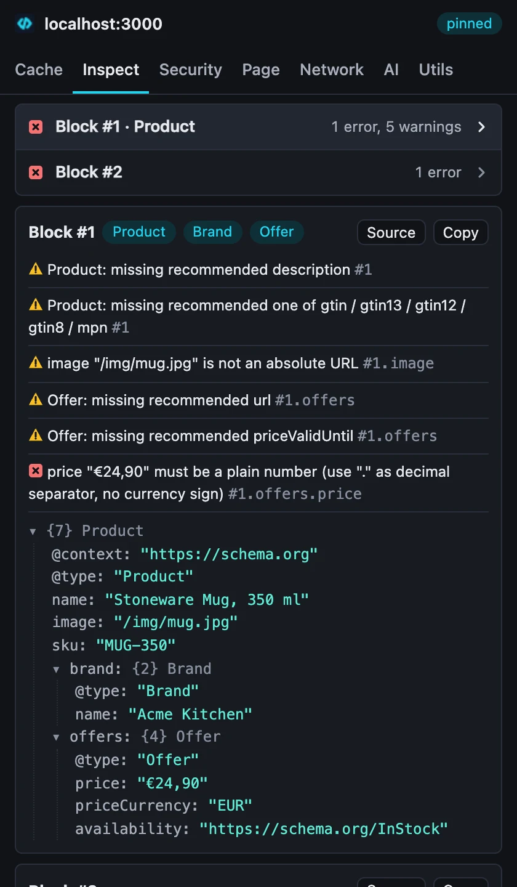
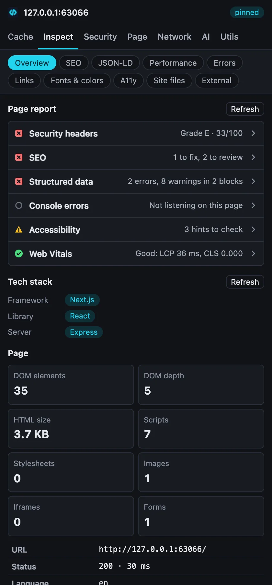
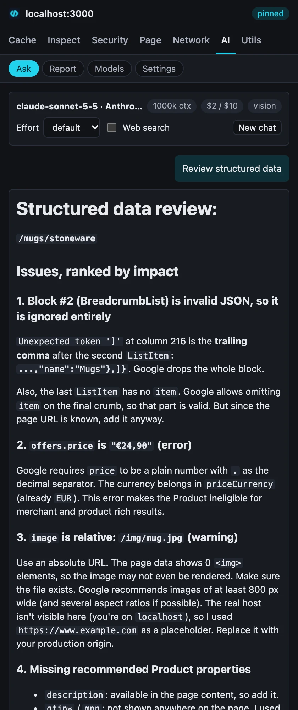

Every dev tool you keep installing, in one side panel.
devkit clears a site's cache, checks its JSON-LD, grades its headers, rewrites its requests and asks your own model about the page. One Chrome extension instead of a toolbar full of them.


- 1
offers.price "€24,90"must be a plain number: Google drops the price snippet. - 2 The page has a description, its Product JSON-LD has none.
- 3 The BreadcrumbList block is invalid JSON (a trailing comma, line 1, column 217), so Google sees no breadcrumb. It is listed further down the panel.
Type what you need.
Alt Shift D opens the palette on any tab. Every tool is one search away: actions run on the spot, panels open in the side panel. This is the extension's real command list. Try it.
64 commands↑ ↓ move · Enter picks
- Alt Shift S side panel
- Alt Shift X fresh start: clear site data, hard reload
- right-click summarize the page, explain selected code, inspect JSON-LD or headers
Seven tabs. The tools you open forty times a day.
The same tab bar as the extension. Pick one.

Inspect
What the page ships, read from the page itself: a page report, stack, SEO, structured data, Web Vitals, errors, links.
Your model reads the page devkit just read.
Every analysis sends the same data the inspectors show: the JSON-LD findings, the security checks, the Web Vitals, the captured errors, the page's main text. So the answer quotes the page, not a guess about it.
- Run
- Review structured data, on the demo page of Fig. 1
- Model
- claude-sonnet-5-5 through Anthropic's API
- Tokens
- 1,100 in · 2,031 out
- Cost
- $0.023, shown before and after the call
- Found
- the trailing comma, the price format, the relative image URL
- Any provider. The catalog comes live from models.dev and OpenRouter through llm-models; the offline fallback lists 209 providers and 6,343 models.
- Or no provider. Point it at Ollama, LM Studio or Jan on localhost.
- No devkit server. Calls go from your browser to your provider through llm-connect. The key is encrypted on your device (AES-GCM under a non-extractable key).
- Fourteen analyses. A fix plan for the whole page, summarize, explain the stack, SEO audit, fix JSON-LD, security headers, performance, accessibility, console errors, explain selected code, write a Playwright test, extract data as JSON, meta tags, UI critique from a screenshot.
- Or hand it to your coding agent. Every panel that finds a problem has Copy for agent: Markdown with what is wrong, where, the exact fix and how to check it. Overview copies one fix list for the whole page, secrets masked.

It asks before it touches anything.
| Permission | When | Why |
|---|---|---|
activeTab, scripting, storage, sidePanel, contextMenus | install | read the tab you are on, keep your settings, show the panel and menus |
declarativeNetRequest, debugger | install | request rules, emulation and API mocks; Chrome does not let these two be optional |
browsingData, cookies, contentSettings | first use | clear site data, edit cookies, block JavaScript on a site |
| this site, or all sites | first use | follow you across tabs, check links, capture errors, rewrite requests |
The options page lists every permission devkit holds and revokes any of them. The accessibility audit runs axe-core in the page and says what automated checks cannot catch.
Install in a minute.
-
Add it to Chrome
Install devkit from the Chrome Web Store. Chrome keeps it up to date on its own.
-
Press Alt Shift D
Type
json-ldon any page. For AI, open the AI tab, pick a provider or a local server, paste a key, test, save. -
Or load a build yourself
To try a version before it reaches the store, unzip the latest release, open
chrome://extensions, turn on Developer mode, click Load unpacked and pick the folder.
Chrome 116 or later. Each fix or feature merged on main ships as a new release, built and tested automatically, then submitted to the Chrome Web Store.